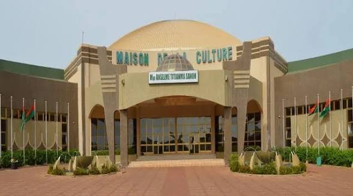

Maison de la Culture

Historique
Édifiée dans les années 1980, la Maison de la Culture est le centre névralgique des activités artistiques et culturelles de la ville. Elle accueille la célèbre Semaine Nationale de la Culture (SNC).
Rôle culturel
Lieu de création et de diffusion artistique, elle favorise la promotion des arts burkinabè et la préservation du patrimoine immatériel. C’est un espace vivant où se rencontrent tradition et modernité.